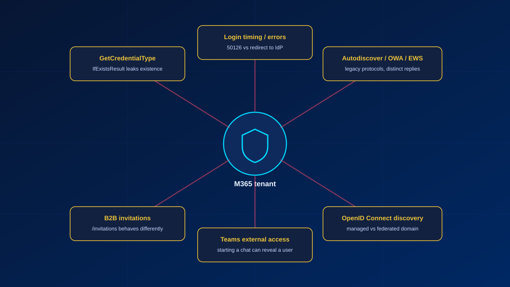
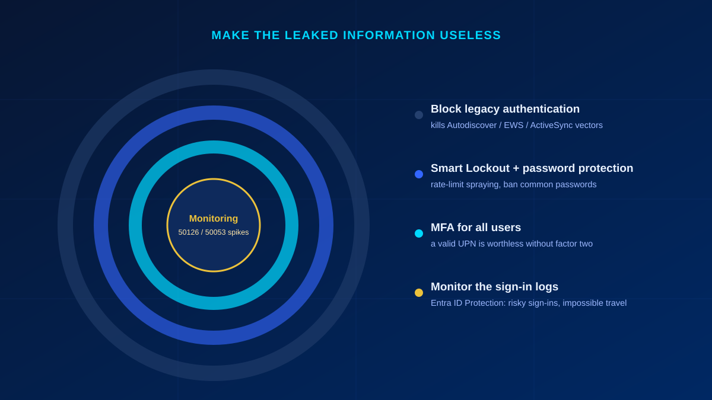

Before an attacker guesses a single password, they want to know which accounts are worth guessing against. In Microsoft 365 they can find out — without any credentials, without tripping a lockout, and without ever authenticating. Post a username to the right endpoint and the tenant tells you whether that account exists. That is tenant enumeration, and it is the quiet first step in front of almost every password-spray and phishing campaign I get called in to clean up.
In short
Tenant enumeration lets an unauthenticated attacker confirm whether an email address is a real account in a Microsoft 365 tenant. Endpoints like GetCredentialType return a plain "exists / does not exist" flag, so the attacker validates targets first and only then sprays passwords — which is far harder to detect than brute-forcing blind. Microsoft can't fully close it because federation and B2B need to know if a user exists. You can't remove the leak, but you can make it useless: block legacy auth, enforce MFA, tune Smart Lockout, add your own banned passwords, and watch the sign-in logs.
What tenant enumeration actually is
Tenant enumeration is the ability for an unauthenticated attacker to determine whether a given email address or username is valid in a target Microsoft 365 tenant. Instead of blindly guessing credentials, the attacker first validates which accounts exist, then focuses password attacks on the ones that do. The security principle it violates is a simple one: don't tell an attacker whether a user exists. M365 tells them anyway.
Why it is a problem
Confirming that philipp@target-company.com is a real account changes the economics of an attack. Once an attacker has a list of accounts they know are real, they can:
- Launch password spraying against validated accounts — one or two common passwords tried across thousands of confirmed users is much harder to detect than hammering a single account.
- Run spear phishing with higher confidence, because they are not wasting shots on addresses that bounce.
- Map the org structure — who works there, and the tenant's username convention.
- Clear the first hurdle of most MFA-bypass techniques. MFA fatigue and token theft both need a valid UPN to aim at.
How enumeration works — the technical vectors
This is not one bug. It is a family of endpoints that each answer the same question in a slightly different dialect. None of the behaviour below is documented by Microsoft — it is what I see when I test tenants, and Microsoft can change any of it without notice.

1. GetCredentialType
The most famous one. A single unauthenticated POST returns a flag telling you whether the account exists:
POST https://login.microsoftonline.com/common/GetCredentialType
Content-Type: application/json
{ "Username": "user@domain.com" }The response carries IfExistsResult: 0 for a valid user, 1 for one that does not exist. The endpoint was built for client-side UX — it lets the login page decide whether to show a password field or redirect you to your organisation's identity provider. It was never meant as an oracle, but it is completely unauthenticated and it answers the existence question directly. Tooling like o365creeper, MailSniper, and CredMaster has leaned on it since at least 2018.
2. Login endpoint timing and error codes
Post a username to the token endpoint (/common/oauth2/token) and the tenant reacts differently depending on the account:
- Valid user → a "password required" response, or a redirect to the federated IdP (ADFS, Ping, Okta).
- Invalid user → an immediate "user not found in this tenant" error.
Different response times, error codes, and HTTP statuses all leak existence. A federated valid user gets redirected somewhere; a non-existent user gets an instant rejection. Even without GetCredentialType, the timing alone is enough.
3. Autodiscover, OWA, EWS and ActiveSync
The legacy mail protocols were designed long before anti-enumeration was a concern, and they answer valid and invalid users differently:
autodiscover-s.outlook.com/autodiscover/autodiscover.xmlreturns mailbox configuration for a valid user and a 600 "Invalid Request" for one that does not exist./ews/,/owa/and/Microsoft-Server-ActiveSynceach give distinguishable responses for valid versus invalid accounts.
4. Entra B2B guest invitations
The Graph invitation API (/invitations) resolves whether an address already exists in the directory, which leaks existence as a side effect of how guest onboarding works. Unlike the login endpoints this one is not unauthenticated: it requires User.Invite.All, User.ReadWrite.All or Directory.ReadWrite.All, so it only matters to an attacker who already holds a token in some tenant, or to a malicious insider.
5. Teams external access
Trying to start a chat with an external user can reveal whether that user exists. Teams has patched and re-broken this behaviour more than once, so treat it as a moving target rather than a closed door.
6. OpenID Connect discovery
The OIDC metadata endpoints (/.well-known/openid-configuration) combined with tenant-specific endpoints leak whether a domain is Managed or Federated, and to which IdP. That single fact tells an attacker whether to run a straight password spray or aim at the ADFS endpoint instead — reconnaissance before a single credential is tried.
Why Microsoft can't easily fix it
This is not a bug waiting on a patch. It is baked into how cloud identity works, and every layer has a reason it leaks.
| Layer | Why it leaks existence |
|---|---|
| Federation | A federated domain must redirect the user to the correct IdP. If the user doesn't exist, there is no IdP to redirect to — and the redirect (or its absence) reveals which case you are in. |
| B2B / guest | Inviting a guest by email inherently requires resolving whether that address exists. |
| UX design | GetCredentialType exists so the login UI can show "enter password" versus "redirecting to your organisation" — two paths for two account states. |
| Legacy protocols | Autodiscover, ActiveSync and EWS predate anti-enumeration thinking entirely and were never designed to hide it. |
Microsoft has made incremental improvements — Smart Lockout keeps separate lockout counters for familiar and unfamiliar sign-in locations, so an attacker gets locked out while the genuine user keeps working, and Entra blocks sign-ins from IP addresses with known malicious activity by default, Conditional Access can block legacy auth (which closes basic-auth spray on those protocols, though not the unauthenticated responses they still give), and some error messages have been obfuscated in certain flows. But the root cause stays open, because federation and B2B genuinely need to know whether a user exists.
What you can do as a defender
You cannot delete the leak. What you can do is make the information it leaks worthless — a confirmed username is only dangerous if it leads somewhere. Layer the controls so it doesn't.

Immediate, high impact
- Block legacy authentication via Conditional Access. That closes basic-auth password spray on Autodiscover, EWS and ActiveSync. Be clear about what it does not do: a Conditional Access policy is evaluated at authentication, so it does not silence the unauthenticated responses those endpoints give. It removes the follow-on attack, not the reconnaissance.
- Tune Smart Lockout. It is always on in every tenant, with a default of 10 failed attempts and a 60-second first lockout. Customising the threshold and the duration requires Microsoft Entra ID P1 or higher.
- Add your own banned passwords. The global banned password list is already applied to every tenant and cannot be switched off; what you add is your own terms — company name, product names, the local football club — which requires Microsoft Entra ID P1 or P2, as does extending the protection to users synchronised from on-premises AD DS.
- Enforce MFA for all users. This is the one that matters most here: enumeration plus a correct password still fails without the second factor, so a valid UPN on its own is worthless.
Medium term
- Monitor sign-in logs for enumeration patterns — high volumes of error
50126(invalid username or password) or50053from a single IP are the fingerprint of a spray in progress.50053has two causes — the account is locked after too many wrong-password attempts, or the sign-in was blocked because it came from an IP address with known malicious activity — so check the Failure reason column to tell them apart. During a spray you will often see the second. - Use Microsoft Entra ID Protection to detect leaked credentials, risky sign-ins, impossible travel and its own password spray detection, and feed that risk into Conditional Access. These detections are Premium — they need Microsoft Entra ID P2.
- Check what is left of basic authentication. Microsoft has been permanently disabling it in Exchange Online for Outlook, EWS, POP, IMAP, ActiveSync and Remote PowerShell since October 2022, so in most tenants only SMTP AUTH — on its own retirement timeline — and non-Exchange legacy clients remain. Verify with the modern authentication settings in the Microsoft 365 admin center and
Get-AuthenticationPolicyin Exchange Online PowerShell.
Key takeaways
- Tenant enumeration confirms which accounts exist before any password is tried — it is reconnaissance, not an attack in itself.
GetCredentialTypeand itsIfExistsResultflag are the classic vector, but timing, legacy mail protocols, B2B, Teams and OIDC discovery all leak the same fact.- Microsoft can't fully close it — federation and B2B need to resolve whether a user exists.
- The defence is not to hide the username, but to make it useless: MFA, block legacy auth, tuned Smart Lockout, your own banned password list, and monitoring.
If you want to know how exposed your own tenant is — whether legacy auth is still open, whether your sign-in logs are already full of 50126 spikes, whether MFA actually covers everyone — that is exactly the kind of review I do. Get in touch.
Glossary
- Tenant enumeration
- Determining, without authentication, whether a username or email address is a valid account in a target Microsoft 365 tenant.
- GetCredentialType
- An unauthenticated Microsoft login endpoint that returns an
IfExistsResultflag indicating whether an account exists; built for login-page UX, abused for enumeration. - Password spraying
- Trying one or two common passwords across many accounts, rather than many passwords against one — low and slow, to stay under lockout thresholds.
- Managed vs Federated domain
- A managed domain authenticates directly against Entra ID; a federated domain redirects to an external IdP such as ADFS. OIDC discovery reveals which, guiding the attacker's next move.
- Smart Lockout
- Entra ID's adaptive lockout. It keeps separate lockout counters for familiar and unfamiliar sign-in locations, so an attacker gets locked out while the genuine user keeps working. Blocking by IP reputation is a separate, always-on Entra protection that also returns AADSTS50053.
- Entra ID Protection
- Microsoft's risk engine that flags leaked credentials, risky sign-ins and impossible travel, and can feed risk into Conditional Access.
Frequently Asked Questions
Can I stop Microsoft 365 tenant enumeration completely?
No. The leak is architectural — federation and B2B guest invitations both need to resolve whether a user exists, so endpoints like GetCredentialType and the login flow will keep answering that question. The realistic goal is to make a confirmed username worthless by layering MFA, blocking legacy authentication, tuning Smart Lockout, adding your own banned passwords, and monitoring the sign-in logs.
Is tenant enumeration illegal or an actual attack?
On its own it is reconnaissance, not intrusion — no credentials are used and nothing is accessed. It is the step that comes before password spraying or phishing. That's exactly why it matters: stopping the follow-on attack is where your controls earn their keep.
Does enforcing MFA make enumeration harmless?
MFA is the single most important control here, because a valid username plus a correct password still fails without the second factor. It does not stop the enumeration itself, so pair it with blocking legacy authentication (which bypasses MFA) and Smart Lockout to cover the whole path.
Which sign-in log signals point to an enumeration or spray attempt?
Watch for high volumes of error code 50126 (invalid username or password) and 50053 originating from a single IP or a small range, especially spread thinly across many accounts. 50053 means either the account is locked out or the sign-in came from an IP address with known malicious activity, so read the Failure reason column before you draw a conclusion. Entra ID Protection's risky-sign-in and impossible-travel detections add another layer.